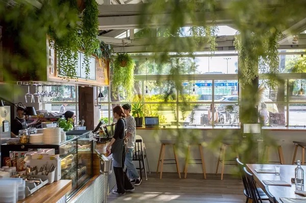

目標：熟悉 <table>、合併儲存格（colspan/rowspan）、替代文字（alt）、圖片大小與標題對齊。
| 分類 | 縮圖 | 標題與描述 | 拍攝日期 |
|---|---|---|---|
| 城市風景 |
淡水/夕陽
|
河畔夕照 金色陽光灑在河面，倒映城市天際線。 |
2025-09-01 |
|

台灣/咖啡廳
|
夜色小徑 街角咖啡店透出溫暖光暈。 |
2025-09-02 | |
| 海邊旅行 | |||
| 海邊旅行 |
台灣/海邊
|
清晨海浪 第一道陽光照亮浪花與沙粒。 |
2025-09-03 |